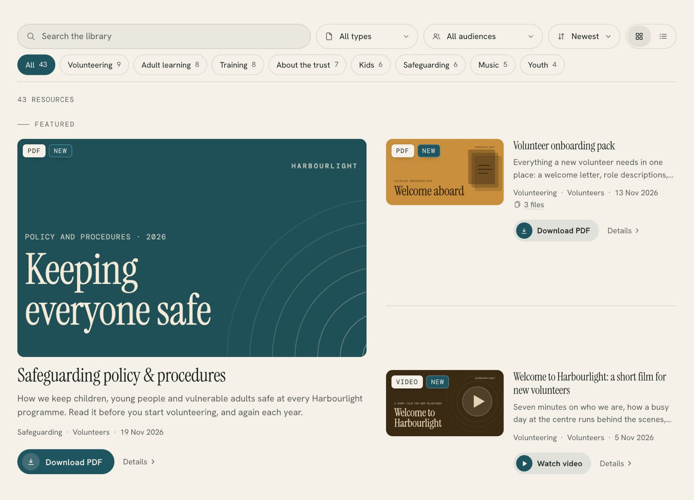
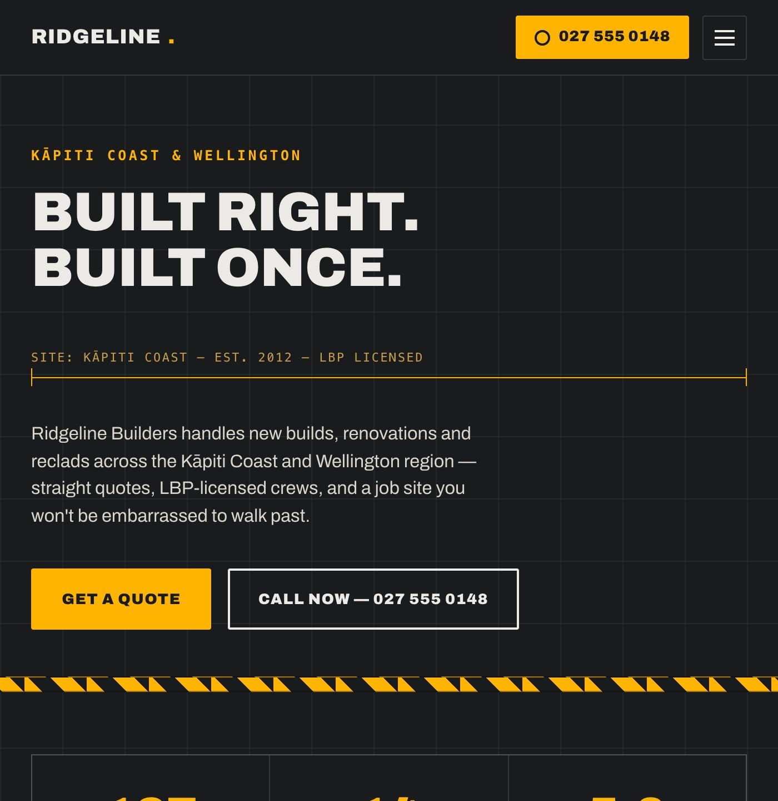
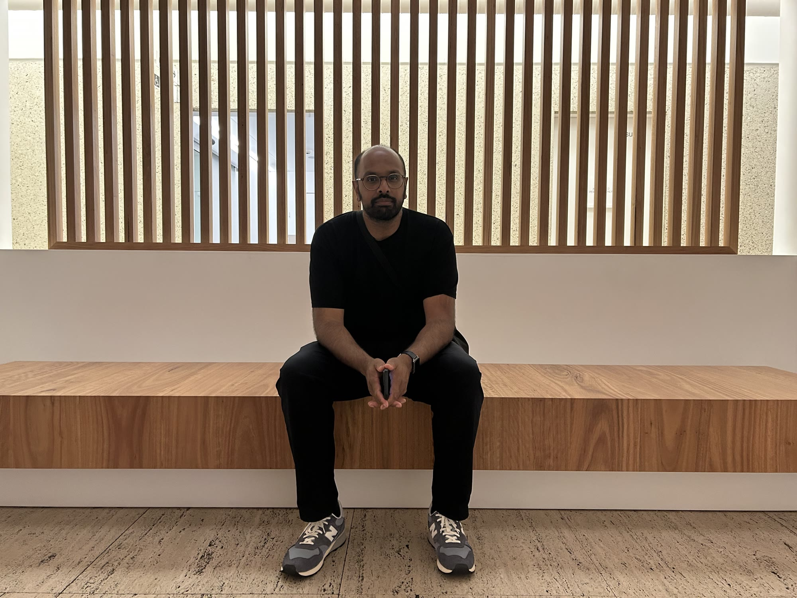

“He made the whole process easy and straightforward, was great to work with, and delivered work that we are extremely pleased with.”
/ A multidisciplinary creative studio in Aotearoa New Zealand.
SINGH /STUDIO
Telling stories that matter.
Trusted across Aotearoa
10+ years, 25+ organisations
The Salvation Army NZ / Future Partners / National Dialogue for Christian Unity / Peniel Trust / Butterfly Builds / Wellington Church Network / Anglican Financial Care / Anglican Missions / Joy Florals
/ In their words
“Working with Kris is the perfect combination: a technical professional who also takes the time to listen to the client and ‘get it right’.”
01 / Position
Singh Studio helps organisations doing good work tell their stories well. I’ll help you find the right words first, then design and build whatever gets them to the people who need to hear them.
02 / Disciplines
Seven disciplines. Click to open.
This is where nearly all of my work starts. I help you work out what you want to say and who needs to hear it, then plan how it reaches them, whether that’s an update for your own people, a fundraising appeal or a story in the paper.
- Comms strategy & planning
- Message architecture
- Campaign development
- Media & issues management
Websites that load quickly, read clearly and are easy for your team to keep up to date once I’ve handed them over. I’ve built conference platforms, brand and organisation sites, and landing pages for appeals and events.
- Design systems & UI
- Build & CMS setup
- Performance & SEO
- Care & iteration
If you’d like to get going sooner, have a look at my ready-made templates, each with a working demo.
Small, focused apps that do one job well: tools for your team, platforms for your members, and prototypes that let you try an idea with real people before you spend too much on it.
- Product design
- Web apps & platforms
- Rapid prototyping
- Integrations
Practical AI that takes the repetitive work off your team’s plate, from content workflows to assistants and automations. I can also help you work out where AI is genuinely useful for you, and where you’re better off without it.
- Workflow automation
- Custom agents & assistants
- Content & comms pipelines
- AI strategy & training
Photos that tell people something true about you: brand libraries, portraits, events, and the quieter documentary moments in between. There’s a selection in the archive further down the page.
- Brand & campaign shoots
- Editorial & portraiture
- Events & documentary
- Retouch & colour
I can take a film from the first idea through to the final colour grade, directing, shooting and editing it myself. That covers brand films, broadcast openers, event coverage and shorter cuts for social.
- Direction & production
- Edit, grade & motion
- Broadcast & event packages
- Social-first formats
Original music, sound design, podcasts and mixing. I’d rather write something that suits your message than reach for the stock track everyone else is using.
- Music production & composition
- Podcast & voice production
- Sound design for film
- Mix & master
03 / Selected work
Web, app and audio. Open a card for the full case.


0+years behind code,
cameras & consoles
cameras & consoles
0+organisations
served
served
0disciplines
under one roof
under one roof
0point of contact,
start to shipped
start to shipped
04 / Shop
Plugins, website templates and ready-made kits.

Six Squarespace plugins for charities and churches.
They add things Squarespace doesn’t do on its own, like a searchable staff directory, a sermon library or a giving thermometer. Each one goes in with a single paste.
From US$19 each, or all six from US$129

Ready-made kits
Documents and spreadsheets you download and fill in.
Visit the shop
Prices in US dollars
05 / How I work
See what it costs before we talk.
Every service and price is on one page: new websites, refreshes, care after launch, and words, film and audio. Choose what you need and your enquiry writes itself, ready to send.
See services and prices →06 / Kris

I run Singh Studio and build everything around your message.
I’ve worked in communications since 2014, almost all of it for organisations doing good work. The core of it is strategy and writing: positioning and messaging, brand voice, editorial, press and media, fundraising appeals, and the policy that keeps a whole team saying the same thing.
Singh Studio is where I do the hands-on work. I started it in 2020 to build websites for teams I already knew, including The Salvation Army’s Next Gen and Creative Ministries teams, and it now covers apps and AI workflows as well, with photography, film and sound when a job needs them. Having spent so long on the client side, I know what an appeal, a board paper or a press release has to achieve before anyone looks at the design.
You’ll deal with me from the first meeting through to launch and the fixes afterwards. I write the words, design and build the thing, and I’m the person who answers when something needs to change.
- Base
- Aotearoa New Zealand, working anywhere
- Background
- In communications since 2014. BA in Media Studies and Sociology
- Range
- Web, apps & AI, backed by photography, film & sound
- Status
- Taking on new projects
/ From the archive
Keep scrolling — the table moves sideways. Browse the full archive →
full archive 40 frames / 4 sets →
07 / Start
LET’S /TALK
Got it. It’s with me now.
I’ll reply to the address you gave within one business day, New Zealand time. If it’s urgent, you can still grab a 20-minute call.
Taking on new projects kris@singhstudio.co.nz Replies within one business day, NZT